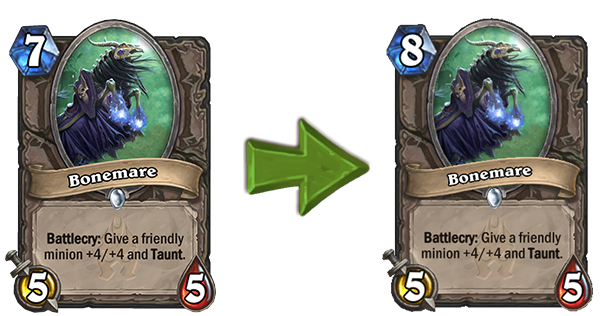
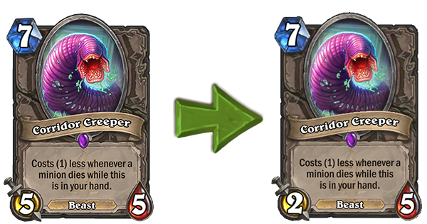
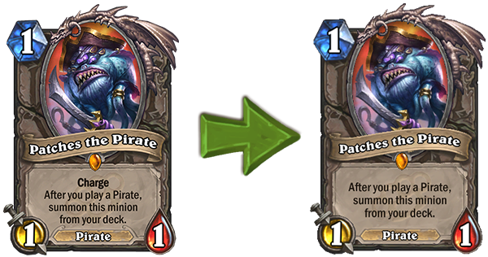
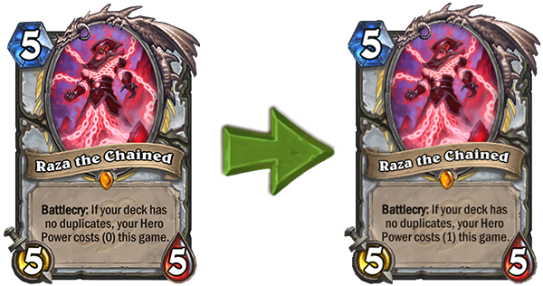

Hearthstone 10.2 Güncellemesi ve Nerfler Hk.
Gizli Markov Süreçleri üzerine blog yazısı yayınlamam gerekirken yazdığım yazıya bakın sayın seyirciler… Gizli Markov Süreçleri yazısı benim seminer konum olduğundan çoğunlukla kopyala-yapıştır üzerinden bloga aktaracağım. Ama sanki daha büyük bir aksiyon varmış gibi şuan bu blog yazısını yazmaya koyuldum. Neden? Çünkü en sevdiğim oyuna güncelleme geliyor ve bazı kartlar nerf yiyor! Normalde bu tip güncellemelere ilişkin yazı yazmam hatta pek de önemsemem. Ama bu seferki cidden büyük. Çünkü dünya şampiyonası sırasında bütün oyuncuların meta decklerde oynadıkları kilit kartlar nerf yedi. Bu güncelleme oyunda ciddi manada meta değişimine sebep olacak gibi gözüküyor.
Öncelikle bazı kartlarda çok geç kaldıklarını belirtmeliyim. Öyle ki, yıl dönümünden ötürü 2 ay sonra wild moda kalkacak kartlardan daha yeni nerf yiyenler var. Fazla uzatmadan nerf yiyen kartlara bakalım.
1. Bonemare

Listemizde ilk sırada benim de favoriler arasında gördüğüm, agresif ve defansif olarak oynanabilen, güçlü bir yardımcı kart var. Bir yazımda “bazı kartlar Legendary kartlar kadar güçlüdür” derken örnek verdiğim bu kartın mana değeri düşük görülmüş olacak ki 1 mana arttırılmış.
Editör yorumu: Fazla bir fark olmamış, sadece bazı durumlarda Mage sınıfına karşı oyun oynayan birisi varsa Flamestrike kartının etrafından oynaması gerekecek gibi duruyor. Agresifliği bir miktar azalmış olmasına karşın hala iyi bir yardımcı kart. Metalarda halen kullanılması olağan. Nerf fazla farkettirmemiş, ama yerinde bir nerf.
2. Corridor Creeper

İkinci sırada tüm agresif decklerde bulunan, güçlü ama ulaşılması zor bir kart var. Bu kart, rakibinizin olası bir board clear durumuna kavuşması halinde elinizde ucuzlayarak 0 mana 5/5 gibi büyük bir stat ile sahaya konabiliyordu. Özellikle Bonemare kartı ile 7 manada 9/9 taunt bir minion oynayarak rakibe zor anlar yaşatabiliyordunuz. Artık yaşatamayacaksınız gibi duruyor, çünkü tamami ile çöp oldu desek yeridir. Artık 5/5 değil, 2/5 bir minyon olarak sahaya düşecek…
Editör yorumu: Corridor Creeper artık tarih olmak üzere. Agresif oyuncuların yediği en büyük darbe diyebilirim, az önce de belirttiğim gibi neredeyse tüm agresif destelerde olan bir kart. 2017 şampiyonasında birçok oyunda dengeyi bozduğunu gördüğümden nerf için geç kalındığı kanaatindeyim. Ama bu nerf de biraz zalimce olmuş sanki. 3 attack idealdi. Şimdi 5/5’ten bir anda 2/5’e düşürmek de attan indirip köpeğe bindirmek olmuş. Bari eşeğe bindirseydiniz. Biraz fevri, ama gerekli bir nerf.
3. Patches the Pirate

Üçüncü sırada vakti zamanında kanserliği ile oyunculara ah çektiren, işlevsiz gibi gözüküp saman altından oyun kazandıran, özellikle pirate sınıfı kartlarla kombinasyonu yüzünden sıkıntılar çıkaran bir kart var. “I’m in charge now!!!” sözü ile aşina olduğumuz bu sevimli Legendary kartımız da nerf yiyenler listesine SONUNDA düştü. Çünkü yaklaşık 2 yıldır (Kraken yılından beri) tüm agresif ve combo pirate destelerinde bulunuyordu. Elinizden bir pirate sınıfı kart oynadığınızda destenizden çıkıp charge özelliği ile anında saldırı yapabilen 1/1’lik önemsizmiş gibi görünen bir minion sahaya fırlıyordu. Artık o “Charge” özelliği kaldırıldı.
Editör yorumu: Kardeşim, siz “Pirate Warrior çok O.P.” diye Fiery War Axe’ın mana costunu 3’e çıkartmadınız mı? Size “Fiery War Axe’da iş yok, Patches’i nerfleyin” diye söylendiğimizde topluluğa “hadi len oradan” çekmediniz mi? Eee, nolacak şimdi? Reddit çalkalanıyor sayenizde. Bir Fiery War Axe, bir de Patches the Pirate bu kadar konuşuldu yeminle. Ama malesef yaptıklarınızı geri almayacağınız için Warrior sınıfı çöp toplamaya devam edecek. Kalmış 2 ay, hiç nerflemeseydiniz daha iyidi. Yerinde ve geç bir nerf oldu.
4. Raza the Chained

Dördüncü ve son sırada Shotgun Priest‘in kilit kartı var. İlk ortaya çıktığında haliyle Hero Card olayı yoktu ve sadece sıfır manaya heal kullanıp mutlu mesut yaşıyordunuz. Belki wild decklerde sıkıntı yaşayabilirdiniz, o da Netherspite Historian içerisinden Coldarra Drake bulursa Auchenai Soulpriest ile combo yapıp Exodia Priest olarak oyunu bitirmesi olaraktı ki bu bile çok çok düşük bir ihtimaldi. Sonra KoFT expansionu geldi ve bu expansion ile birlikte hero kartlara kavuştuk. Sorun hero kartlara kavuşmak değildi, sorun priestin Death Knight kartının Hero Power’ının Raza ile çok güçlü bir kombo oluşturmasıydı. Bunun önüne Hero Power’ı 0 mana yerine 1 mana’ya düşürerek geçmeye çalışıyorlar. Bakalım hayırlısı.
Editör yorumu: Yine aynı şeyi söyleyeceğim, ama söylemeliyim de. Abicim, Kolento 2017 dünya şampiyonasında Shotgun Priest metasına yenildi. Raza’nın olması oyunun kazanılması ve kaybedilmesi üzerinde büyük rol oynuyor. Sadece ilk 5 tur içerisinde elinde Raza’nın olup olmaması bile Winrate’i değiştiriyor. Üzerinden 1 expansion geçti, neredeydiniz? 3 şampiyona geçti bu deck meta olduğundan beri, anca mı aklınıza geldi gerçekten? Çok geç kalınan gerekli bir nerf daha. Darısı Voidlord’un başına…
Bu kartlardan Raza the Unchained hariç diğerlerine sahibim. Güncelleme geldiği gibi disenchant edip o dustlarda farklı meta deckleri koşalamayı düşünüyorum. Tüm bu nerfler kesinlikle oyundaki meta algısını tamamen değiştirecek. Bakalım hayat daha ne gösterecek…